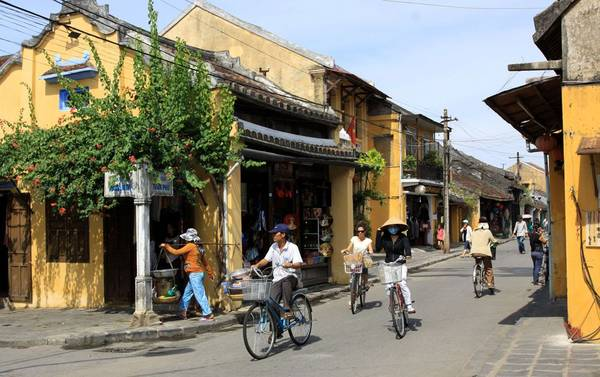
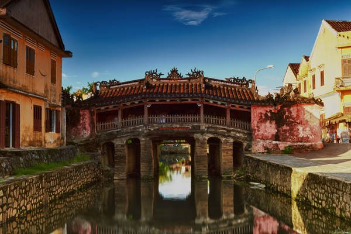

Cẩm nang du lịch Hội An
Nổi bật trong cung đường du lịch miền Trung, phố cổ Hội An như một bức tranh mộc mạc, giản dị và nên thơ. Dù là ngày hay đêm, du lịch Hội An vẫn mang trong mình những vẻ đẹp lôi cuốn khác nhau.
Lên lịch du lịch Hội An
Thời điểm du lịch Hội An tuyệt nhất là từ tháng 2 đến tháng 4 hàng năm, trời ít mưa, khí hậu dễ chịu. Tránh đi vào mùa hè vì nhiệt độ tăng cao, rất oi bức.
Mùa mưa từ tháng 10 – tháng 11 cũng có nhược điểm là không gian ẩm ướt do mưa nhiều và nặng hạt.
Bạn hãy đến thăm Hội An vào ngày 14, rằm âm lịch hàng tháng để tham dự đêm phố cổ.
Vào dịp này bạn sẽ có cơ hội được tận mắt nhìn ngắm những chiếc đèn lồng đỏ rực giăng khắp phố,
một khung cảnh đặc trưng của Hội An vào dịp lễ.
Máy bay
Hội An thuộc Quảng Nam nhưng sân bay gần nhất lại ở Đà Nẵng (Hội An cách Đà Nẵng 30km).
Hiện nay các hãng hàng không như Vietnam Airlines, Jetstar, Vietjetair đều có khai thác các đường bay từ TP. HCM và Hà Nội đến Đà Nẵng.
Nếu muốn mua được vé rẻ, bạn nên đặt trước khoảng 3 đến 6 tháng.
Các phương tiện khác : Ô tô, tàu hỏa
Từ Hà Nội hoặc Sài Gòn đều có tuyến xe lửa đến Đà Nẵng (tuyến Bắc – Nam), giá vé dao động từ 400.000đ đến 1.200.000 VND tùy loại tàu và loại ghế.
Mất từ 14 đến 20 tiếng để đi từ hai thành phố này đến Đà Nẵng bằng xe lửa.
Xe khách: tốn khoảng 400.000 – 500.000 VND. Xe Hoàng Long, Hlink, Mai Linh, Thuận Thảo. Thời gian 18 đến 20 tiếng từ Hà Nội/Sài Gòn đến Đà Nẵng.
Vì điểm trung chuyển đến Hội An chủ yếu hiện nay là bến tàu, xe Đà Nẵng. Từ đó bạn có thể bắt xe bus/taxi đi Hội An rất thuận tiện.
• Đi từ hướng Hà Nội cũng có thể chọn điểm dừng tại ga Tam Kỳ (Quảng Nam), tại đây bắt xe đi Hội An.
• Nếu xuất phát từ hướng TP. HCM bạn có thể chọn chuyến xe ra miền Bắc hoặc Đà Nẵng, sẽ đi ngang và dừng tại Hội An.
Lưu ý: Từ thành phố Đà Nẵng đi về Hội An có hai cách:
+ Bạn có thể đi theo quốc lộ 1 về phía Nam khoảng 27km đến đường Vĩnh Điện rồi rẽ trái thêm 10km là đến Hội An.
+ Con đường thứ hai gần hơn, vắng hơn, đi từ Trung Tâm Đà Nẵng qua cầu sông Hàn, vào tỉnh lộ Đà Nẵng – Hội An, đến Hội An khoảng 30km.
Phương tiện đi lại ở Hội An
• Hội An có đầy đủ các dịch vụ giao thông như xe bus, taxi, xe ôm, xích lô
• Giá thuê xe máy từ 120.000 – 150.000 VND/ngày.
• Nhưng thú vị nhất khi đến thăm Hội An vẫn là đi bộ hoặc thuê xe đạp vòng quanh khu phố để cảm nhận nét đặc biệt của nơi này.
Giá thuê một chiếc xe đạp là 30.000VND/ngày.

Các số điện thoại cần biết:
Công an thành phố Hội An: 0510 3861204
Bưu điện Hội An: 0510 3861635
Bệnh viện Hội An: 0510 3864750
Taxi Hội An: 0510 3919919
Tư vấn du lịch: 0510 3910919
Những điểm du lịch không thể bỏ qua khi du lịch Hội An
Chùa Cầu
Chùa Cầu là viên ngọc giữa lòng Hội An. Cầu xây dựng vào cuối thế kỷ 16 và được gọi là cầu Nhật Bản. Ở giữa cầu có một ngôi miếu nhỏ thờ Huyền Thiên Đại Đế. Cầu có mái che khá độc đáo cùng các kết cấu, họa tiết trang trí thể hiện sự kết hợp hài hòa giữa các phong cách kiến trúc Việt, Hoa, Nhật, và cả phương Tây.
Ẩm thực của du lịch Hội An
Cơm gà Phố Hội
Với tất cả sự khéo kéo tỉ mỉ trong cách chế biến, người Hội An đã tạo ra một món cơm gà đủ tạo dấu ấn để người ta cho nó một cái tên riêng: Cơm gà phố Hội. Cơm gà phố Hội ăn với hành tây, đu đủ chua, rau thơm Trà Quế, còn có một chén súp trộn tim, gan, cật gà ăn kèm càng tăng thêm phần hấp dẫn.